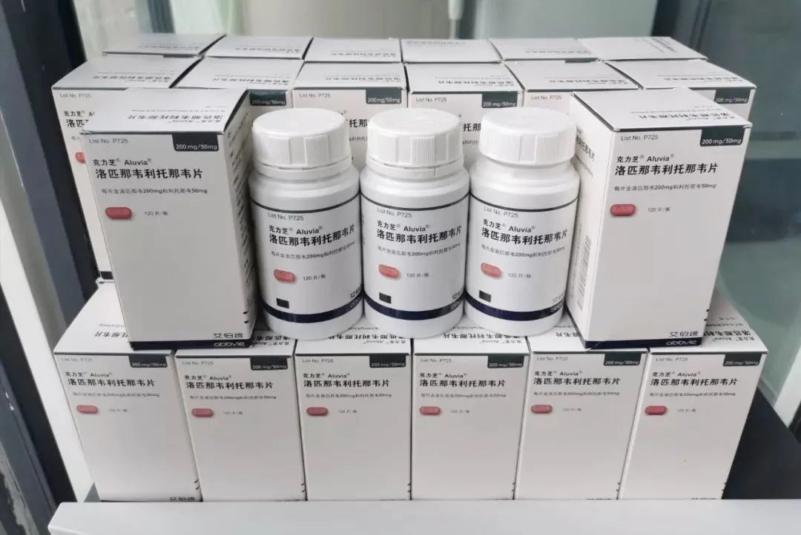
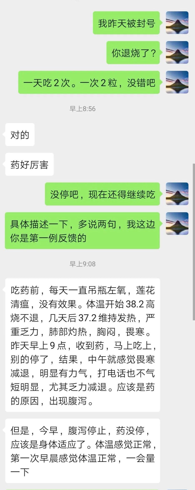

送药给新冠病人的HIV感染者 | 正午
原文链接 备份链接 编者按：1月28日，HIV感染者“HIV松鼠哥”发微博称，可以向确诊的新冠病毒肺炎患者免费提供“克力芝”——一种被列入《新型冠状病毒感染的肺炎诊疗方案》的抗HIV药物，药品则主要来自国内HIV感染者的捐赠。从那天起，他 …
“
不管是艾滋病人还是新冠肺炎感染者，我们都希望更多的人能够活下来。

—全民故事计划的第442个故事 —
一
1月26日，国家卫健委发布新型冠状病毒感染的肺炎诊疗方案（试行第三版），其中对于口服药物治疗一览中，增加了推荐使用“洛匹那韦利托那韦”，每次2粒，一日二次。
有药，就意味着还有一线生机。
只是那拗口的药物名称对于一般人来说可能难以理解，但松鼠（微博：HIV松鼠哥）知道那是什么，他跟艾滋病打了八年交道了。
洛匹那韦/利托那韦有另一个更为好记的名字——克力芝。
治疗艾滋病的药物有很多种，医生会根据每个人的身体情况搭建出一个组合，这被称之为“鸡尾酒疗法”。
2012年，临近大学毕业前，松鼠拿到了自己的艾滋病确诊报告单。那时的他觉得，“千万人的北京，一个能说话的人都没有”。协和医院的大夫安抚他：“吃药吧，这和乙肝一样，只是一种慢性病。”
在经历短暂的沮丧期后，松鼠去了广州，成为写字楼里的一名白领，每天循规蹈矩地生活，每隔三个月到定点医院“打卡”——拿自己的药。药物治疗的效果很好，他的身体状况也与健康人无异。
从确诊到现在的八年时间里，有三年多，松鼠吃的都是克力芝。
作为免费药，克力芝也有自身的局限，每天要吃两次，一些人还会拉肚子。“如果有条件，很多患者会选择自费药，副作用小。”
2017年，松鼠来到郑州定居，远离大城市，他可以有更多时间陪伴家人。但也有一些不便，譬如每次拿药都得排很长时间的队。并不是每个人都能腾出时间，有的可能出差或者别的原因，就错过了拿药的日子。
这些药物是按照名额配给的，错失了就没有了，医院不会多给。
松鼠渐渐发现，不止他一个人有类似的困扰，于是他在当年发起了一个互助平台，帮助感染者把闲置的药物拿出来，借给需要应急的人。
这些借药的人，既有忙于出差的白领，也有假期回家的学生，“这个群体是非常丰富的，各种各样的职业、年龄段和收入层次都有。”
所谓“借药”的过程并不需要双方面对面，只需要通过小组成员在网上相互沟通，知道谁有多余的药物再用快递发过去。
松鼠是这群人的核心，他脑子活，懂英文，又体贴人，在他的协助下，隔着天南地北的人都能在互助平台上借到药。
如今，这个互助借药平台的成员已经遍布全国三十多个城市。
1月23号，武汉封城那天，有一个身处武汉的艾滋病患者向他求助：“出不去了，能借药给我吗？”这是第一个求救信号。
收到消息后，松鼠把最后几份打包好的包裹交到快递员手上，稍微缓和了一下绷紧的神经。准备忙完这次，短暂地过一下春节。
当时有好几份发往武汉的快递，眼下就希望他们都能够收到。
二
克力芝是国内药厂给洛匹那韦/利托那韦片取的商品名称，作为蛋白酶抑制剂的一种，它的作用是降低蛋白酶的活性，从而抑制病毒在细胞内的复制，达到治疗疾病的目的。
从2000年开始，洛匹那韦/利托那韦片被用于艾滋病抗病毒治疗。
其实在国家卫健委把克力芝列入治疗新冠肺炎的药物之前，松鼠和互助平台的成员在1月22号就得到了类似的消息。
在1月22号晚上11:39，北京大学第一医院呼吸和危重症医学科主任王广发更新了一条微博。在抗疫第一线的他于21日被确诊感染新冠肺炎，凭着丰富的医学经验，他在隔离病房内进行自我治疗，吃的药就是克力芝。

王广发医生的微博 | 来自网络
松鼠看到的第一反应，是很多人可能拿不到药。除非是吃这个药的艾滋病感染者，不要说普通人，就连医护人员都不一定知道。
对于艾滋病患者，克力芝有成熟的替代品，而对于新冠肺炎患者，克力芝或许是可以救命的。这种药在一般的医院和药店根本没有，流通性很差，绝大部分人都拿不到。
松鼠向互助平台的成员提议：“我们可以把手里的闲置药捐送给有需要的人。”互助平台上的声音很多，意思就一个，“我们做！”
松鼠说：“不管是艾滋病人还是新冠肺炎感染者，我们都希望更多的人能够活下来。”一位给松鼠捐药的网友说：“我们这个群体一直不被理解和认同，但现在疫情当头，我们也应该为社会贡献一点力量。”
为了让更多人能够拿到药，1月28日中午，松鼠在微博上发布动态，向全网的艾滋病感染者筹集闲置的药物，并无偿提供给新冠肺炎患者，条件是——患者必须提供医疗凭据、病例确诊报告或者处方。
松鼠也不是没有考虑过这样做的风险，但药物本身是免费的，不存在仿冒的可能。只是在捐赠过程中，互助平台里有熟悉法律的人提醒道：“我们无权捐献给医生，医生也无权把捐助的药品直接拿给患者。”
最后经过大家讨论，互助平台的人决定直接把药物提供给患者，松鼠说：“我们查过，个人对个人的民间捐助是合法的。”
三
1月28日晚上8点30分左右，第一位新冠肺炎患者联系到松鼠。
对方是武汉某三甲医院的一名医生。他发来了医学证明以及核酸检测结果。到了第二天，向松鼠登记的求助者已经超过了30位。
“那个时候就开始忙了。” 松鼠把互助平台的志愿者组织起来，一部分负责审核，一部分负责药品，自己就做个中间人。

第一批筹集到的克力芝 | 作者供图
从1月29日开始，松鼠陆续收到从全国寄来的克力芝，有的一瓶，有的两瓶，最远的是一名台湾的艾滋病患者，一次性捐了五瓶。
一个人要处理三十多个包裹，让松鼠几乎好几天没有时间睡觉。
要把收到的药物分装打包。他算过：“根据卫健委给的方案，一人份的量是14天，一天两次、一次两粒，国内原厂的克力芝一瓶可供两名新冠患者，印度版一瓶只可供一人。”
分装打包好后，下一步就是发往武汉。大部分快递都已停工，松鼠找到唯一还在营业的顺丰快递，对方一听是武汉就摆摆手：“现在运力不够了，都运救灾物资去了。”
“这就是救灾物资。”松鼠跟对方说道。最后他跟顺丰快递总部进行了沟通，对方同意把药物按照救灾物资的标准一次性发往武汉。
此时的武汉，快递停止投递，最早23号寄出去的药品，收件人不得不去分理部自提。如何把药物送到新冠病人的手上，尤其是还在接受医学隔离的患者，这又是一个问题。
这时，有朋友向松鼠介绍了蜘蛛（微博ID:蜘蛛猴面包）。
蜘蛛热爱徒步，最远去过非洲，还会拍视频，武汉封城后，他戴着口罩，一边做志愿者，一边驾车拍摄“武汉封城日记”。
朋友介绍他俩认识。松鼠直截了当地问对方：“能不能帮忙送药给新冠肺炎患者？”
蜘蛛没有立即答应下来，“这是一件慎重的事，HIV病毒与新冠病毒不同，药物可以通用吗，这药物合法吗？”
但第二天起床后，蜘蛛答应了松鼠，因为松鼠给他的名单上，有武汉三甲医院的医生，不止是这一名医生，在跟松鼠申请药物的名单上，医护人员达到四分之一。
2020年2月1日早晨，第一批八人份的药品寄到了蜘蛛位于武汉光谷的家中，他载着药从武昌出发，经过汉口，然后再转到汉阳。
“八人中，有三位是一线的医护人员。”
从第一批开始，汇集的药物陆续发放出去，松鼠说：“如果没有线上和线下志愿者的协助，仅靠他自己一个人的力量根本不可能办到。尤其要感谢在武汉当地的志愿者。”
很快，松鼠手里的药物告罄，毕竟是艾滋病患者的闲置药物，不可能有太多的剩余，而向他申请药物的名单已经排到80多号，“得想办法弄到新的药。”
松鼠把目光转向印度。近十年来，印度治疗艾滋病的药物需求增长旺盛。
辗转联系到印度的一家药厂，订购了300多盒克力芝，松鼠又在微博发帖：“现有一批来自印度的药物急需带回国内，谁能帮忙？”
一群准备从印度回国的驴友们这个时候联系到松鼠，答应帮他带回来，但因为数量众多，只能先带回一批。
只是前脚刚从印度回到国内，后脚的路就断了，疫情愈发严重，各国开始关闭直飞中国大陆城市的航班。松鼠不得不把目标锁定到当时仍在开放的香港。
2020年2月7日，第一批从印度运来的克力芝到达香港，麻烦紧跟着又来了，香港宣布从2月3号开始封关，对来往人员进行劝返，只保留必要的物资运输通道。
在这种情况下，是一家名为“希望小组”的公益组织帮助了松鼠，“他们也是给被感染的医护人员提供药物的”。
希望小组用人力背回100多份。紧接着香港的航运也停掉了。2月9日，来自印度版的克力芝抵达郑州，又以最快的速度发往武汉。

给从印度订的300份药物打包装箱 | 作者供图
四
对于在微博上联系松鼠需要用药的人，松鼠的回复一般都很直接：“地址、凭证给我。”他无法解决他们情绪上的恐慌。
双方留下联系方式，加到微信后，松鼠迅速做开场白，接着把资料转给负责审核的志愿者，他们再给每一个需要的人进行排号。
对于服药可能会引起的副作用，松鼠也提醒他们：“不要给穿着防护服的医生吃，会不方便。”互助平台的律师朋友又提醒松鼠，拿没有经过严密医学验证的抗病毒药物治疗新冠肺炎患者，是需要承担医疗和伦理风险的。松鼠没有想那么多，这个风险他也愿意承担。
谈论到这个药引起的副作用，也有人在网上讨论反驳：“副作用和活命，你选哪个？”还有个别患者，即便拿到药也不敢吃，“尤其是他们知道这个药是治疗艾滋病以后。”
捐药的关注度大了之后，网上开始有人对松鼠送药的行为产生质疑：“你不是医生，凭什么把处方药给患者？”
对于克力芝治疗新冠肺炎的有效性，松鼠也不好下定论，“具体我没有统计过，总体上70%是有效的，主要是早期的轻症患者。”
在这期间，松鼠还遇到一个意外情况，他的微信号冷不防地被封了，“有些人申请了拿不到药，就去后台举报，微信就被封了。”

服药后，患者的反馈 | 作者供图
网上对于松鼠的攻击和质疑一直没有停止过。有人散布谣言，说松鼠提供的药物是要掏钱买的。那段时间，确实有不法商贩在网上叫卖克力芝，一度达到4000元一瓶。
松鼠找到谣言的传播者跟对方对质：“如果你有证据证明我是卖药，请你拿出来。”对方诡辩：“是从微信里看到的。”
松鼠第一次感到愤怒，给对方下通牒，“我不管你从哪里看到的，但凡你知道造谣者的信息，请你告诉我，我一定会走司法程序。”
也只有在极少的空闲时，松鼠才有精力去回应网上的舆论，大多时间，他还在为捐药想办法。第一批印度药只解了燃眉之急，松鼠又从印度订购了300多份，面对那些质疑和责问，他也只能抛到脑后。
新订的300多份药物本该在2月10日到达国内，这次的问题是被海关扣住了。
松鼠很着急：“海关的人说需要药品进口许可才能放行，目前我得先去找受捐单位(医院)，拿到医院开出来的接收材料，再去找省药监局开药品进口许可。”
规则就是规则，即便海关的工作人员知道松鼠送出的是救命药，然而一次性通关超过三百份，就必须要这些证明。
松鼠并不责怪海关的工作人员，“他们也给我想了很多办法。”问题最后是卡在了印度的药商那里，“他们处理文件的速度太慢了。”
在拿不到药的那几天，松鼠只好将微博签名改成：“目前没有克力芝了，请见谅”。
采访到最后，松鼠说，“如果这次捐药活动能够扭转大众对于艾滋病患者这一群体的偏见，当然好。如果不能的话，我们也不强求。我们其实就是想救一个人，尽一份力。”
2月19号，松鼠又收到了网友捐赠的100盒克力芝，可以供应150人份，这些药，全部都是无偿提供。他又开始恢复了忙碌。
作者王大湿，短视频导演
编辑 | 蒲末释
▼
全民故事计划正在寻找每一个有故事的人
讲出你在乎的故事，投递给
tougao@quanmingushi.com
故事一经发布，即奉上千字300元-1000元的稿酬

请您支持一下全民故事计划，点击在看
原文链接 备份链接 编者按：1月28日，HIV感染者“HIV松鼠哥”发微博称，可以向确诊的新冠病毒肺炎患者免费提供“克力芝”——一种被列入《新型冠状病毒感染的肺炎诊疗方案》的抗HIV药物，药品则主要来自国内HIV感染者的捐赠。从那天起，他 …
原文链接 备份链接 凤凰新闻客户端 凤凰网在人间工作室出品 1月28日下午两点，一位在武汉隔离病房的母亲刚刚吸出一些母乳。她有两个孩子，小的还在哺乳期。这是向松鼠哥求助的200多名新冠肺炎感染者之一。 松鼠哥是一名HIV感染者。1月28 …
原文链接 备份链接 研究者正试图揭示新冠病毒的致病性、致死性机制，为临床治疗提供新依据，阶段结果是新冠病毒的致病特征与SARS相似，而进一步的结果或将由解剖揭开 2020年2月初，武汉金银潭医院隔离病区内，医护人员正在给新冠肺炎患者做治 …
原文链接 备份链接 疫情严峻，武汉仍在不断征集新冠肺炎床位。重压之下，各家医院肿瘤科「只出难进」，有患者被迫出院，通过网络发帖求助；也有患者试图寻求省外求医路，却被两边「入院接收单」与「通行证」夹在中间，难寻答案。 —— 同一个家庭里的新 …
原文链接 备份链接 被认为对肺炎有一定疗效的处方药克力芝，在一片混乱中正在脱离处方，四下流通。 全文3338字，阅读约需7.5分钟 “家属急需，能不能卖给我克力芝？” 又一条来自新型冠状病毒感染者家属的求药信息，传送到白桦手机上。 对艾 …